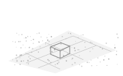

SegCert-PCR3D PERCEPTION20263D perception
SegCert‐PCR: Ground Segmentation Based Certifiable Point Cloud Registration in Unstructured Field Environments
Journal of Field Robotics · 2026
Paper ↗
BibTeX
@article{segcertpcr2026,
title = {{SegCert‐PCR: Ground Segmentation Based Certifiable Point Cloud Registration in Unstructured Field Environments}},
author = {Sanam Akbar and Arzigul Ahat and Eksan Firkat and Wutikuer Aierken and Eliyas Suleyman and Askar Hamdulla},
year = {2026},
doi = {10.1002/rob.70347},
journal = {Journal of Field Robotics}
}
Download citation